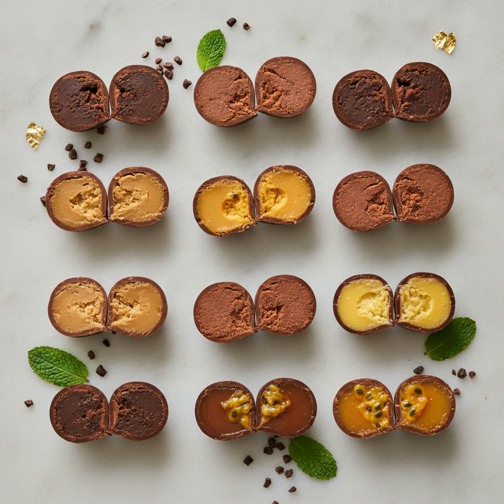
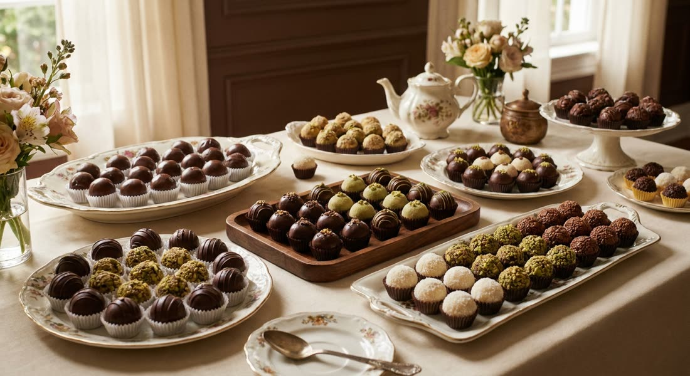
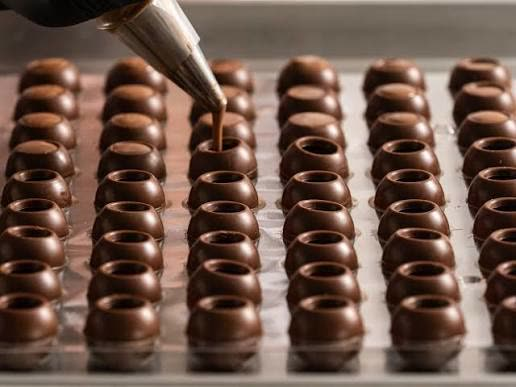
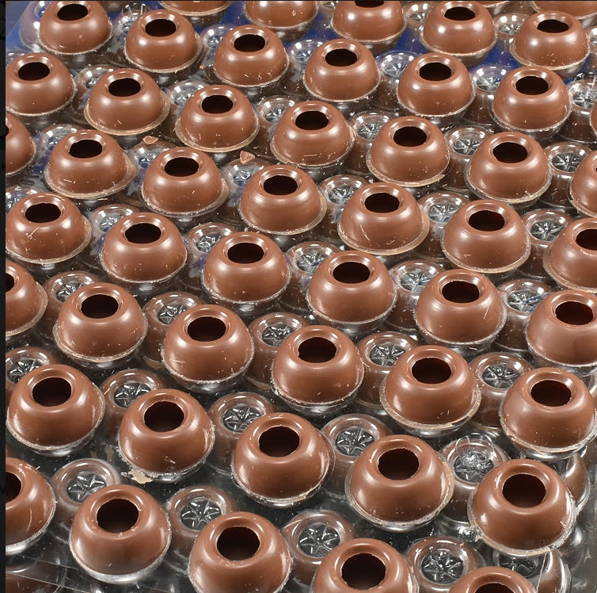

MPSmps.alimentos

♡💬↪🔖
Foto · Confiança e qualidade
mps.alimentos A casca chega igual todo lote. No volume de um evento, é isso que te salva 💛
Mesmo acabamento do primeiro ao último docinho da mesa.
Você foca no recheio e na entrega, a base é com a gente 🍫
Chama no WhatsApp e peça a tabela 👇
#confeitaria #confeitariacuritiba #chocolatenacional #docesparafesta
MPSmps.alimentos

♡💬↪🔖
Foto · Capacidade no pico
mps.alimentos Na semana da data, sua produção não precisa dar conta de tudo sozinha 🌙
A gente entra como o seu braço a mais no pico.
Você mantém o padrão, entrega no prazo e ainda consegue dormir 💛
Vai ter evento grande no mês? Chama no WhatsApp 👇
#docesparafesta #casamento #confeitariacuritiba #mesadedoces
MPSmps.alimentos

♡💬↪🔖
Reels · Bastidor e parceria
mps.alimentos Chocolate nacional, feito aqui, com quem te atende de verdade 🇧🇷🍫
Mesmo resultado do importado, sem depender de dólar.
E, o mais importante, sem te deixar na mão na véspera 🤝
Vem conhecer a gente. Chama no WhatsApp 👇
#chocolatenacional #feitoaqui #confeitaria #fornecedordeconfianca
MPSmps.alimentos

♡💬↪🔖
Reels · Cobertura pronta
mps.alimentos Chega de moldar casquinha de cobertura, uma por uma ✋🍫
A casca já vem pronta, lisa e no ponto.
Você faz o recheio da sua receita, fecha e entrega. E ainda aguenta o calor ☀️
Comenta EU QUERO que eu te chamo no WhatsApp 👇
#confeitaria #trufaoca #coberturadechocolate #docinhosdefesta